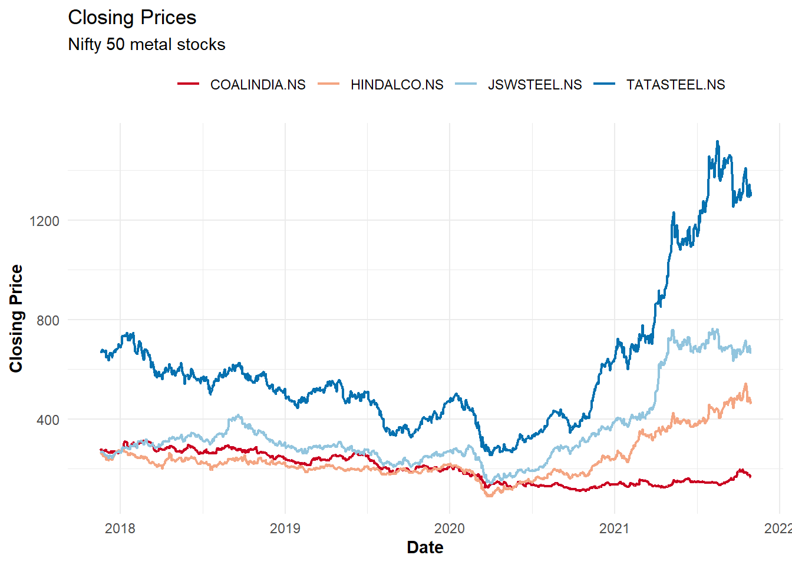

![]()
In the last post we explored how to build a particle swarm optimiser from scratch. In this post, let’s explore how we can leverage such an optimiser to perform mean variance optimisation to find optimal portfolios that satisfy certain constraints.
Additional information on mean variance optimisation and the CAPM model is available in this paper.
Libraries
# install.packages(pacman)
pacman::p_load(pso, ggplot2, dplyr, quantmod, tidyr, plotly)
Pre-requisites
We’ll need a few things before we can actually start running some optimisations:
- Historical prices data
- Historical returns data
- Objective functions and constraints
Ticker information
Since I am based out of India, I’ll restrict myself to stocks that are part of the NIFTY50 index. First we’ll need the tickers for each of the 50 stocks. The list is available as a csv file on the NSE website here.
# Read csv file directly into R
ticker_list <- read.csv("https://www1.nseindia.com/content/indices/ind_nifty50list.csv")
class(ticker_list)
## [1] "data.frame"
# Check if data was red in correctly
head(ticker_list[,1:3], 5)
## Company.Name Industry Symbol
## 1 Adani Ports and Special Economic Zone Ltd. SERVICES ADANIPORTS
## 2 Asian Paints Ltd. CONSUMER GOODS ASIANPAINT
## 3 Axis Bank Ltd. FINANCIAL SERVICES AXISBANK
## 4 Bajaj Auto Ltd. AUTOMOBILE BAJAJ-AUTO
## 5 Bajaj Finance Ltd. FINANCIAL SERVICES BAJFINANCE
Historical prices
Now that we have the right set of tickers, we need historical price data. The quantmod package is perfect for something like this.
# Note that for India, tickers need to be appended with ".NS"
tickers <- paste0(ticker_list$Symbol, ".NS")
# Pull data using quantmod::getSymbols
# Since getsymbols assigns data for each ticker to a
# separate variable, we'll use a loop to pull data for one
# ticker at a time and append to a data.frame
ticker_df <- data.frame()
pb <- txtProgressBar(min = 1, max = length(tickers), style = 3)
for(nms in tickers){
df <- getSymbols(Symbols = nms, verbose = F, src = "yahoo", auto.assign = F)
colnames(df) <- c("open", "high", "low", "close", "volume", "adjusted")
df <- data.frame(df)
df$ticker <- nms
df$date <- rownames(df)
ticker_df <- rbind(ticker_df, df)
setTxtProgressBar(pb, which(tickers == nms))
}
# We'll need to do some data cleaning
# Using only closing prices
prices_df <- pivot_wider(data = ticker_df, id_cols = "date", names_from = "ticker", values_from = "close")
# For simplicity, we'll remove all NAs
prices_df <- na.omit(prices_df)
# Check date range for which data is available
range(prices_df$date)
## [1] "2017-11-17" "2021-10-29"
# Check dimensions
dim(prices_df)
## [1] 973 51
# Chart to check if data has been downloaded correctly
prices_df %>%
# Convert to long form for easy plotting with ggplot
gather(key = "ticker", value = "price", -date) %>%
# Attach industry
left_join(ticker_list %>%
mutate(ticker = paste0(Symbol, ".NS")) %>%
select(ticker, industry = Industry),
by = "ticker") %>%
mutate(date = as.Date(date)) %>%
# Showing only metals
filter(industry == "METALS") %>%
# Plot with ggplot
ggplot(aes(x = date, y = price, color = ticker)) +
geom_line(size = 0.8) +
theme_minimal() +
scale_color_brewer(palette = "RdBu") +
labs(title = "Closing Prices",
subtitle = "Nifty 50 metal stocks",
x = "Date",
y = "Closing Price") +
theme(legend.position = "top",
legend.title = element_text(colour = "transparent"),
axis.title.x = element_text(face = "bold"),
axis.title.y = element_text(face = "bold"))

Historical returns
For the sake of simplicity we’ll calculate daily returns.
# Calculate daily returns
returns_df <- apply(prices_df[,-1], 2, function(vec){
ret <- vec/lag(vec) - 1
return(ret)
})
returns_df <- as.data.frame(returns_df)
returns_df <- returns_df[-1,] ## Remove first row since that's NA
Objective function and constraints
The objective function depends on three things:
- Mean returns (Reward)
- Portfolio variance (Risk)
- Risk aversion parameter
Additionally, we’ll add a constraint to ensure full investment i.e. individual weights must add-up to one.
# Pre computing average returns and the covariance matrix
mean_returns <- sapply(returns_df, mean)
cov_mat <- cov(returns_df)
obj_func <- function(wts,
risk_av = 10,
lambda1 = 10,
lambda2 = 1e2,
ret_vec, cov_mat){
# Some matrix multiplication
port_returns <- ret_vec %*% wts
port_risk <- t(wts) %*% cov_mat %*% wts
# Objective function
# Note that alpha is the risk aversion parameter
# Higher the value of alpha the more conservative the portfolio
obj <- port_returns - risk_av * port_risk
# Full investment penalisation
obj <- obj - lambda1 * (sum(wts) - 1)^2
# Returning negative since the optimiser does minimisation by default
# We need maximisation
return(-obj)
}
Optimiser (2 asset example)
We’ll start with a two asset example just so we can visualise how everything comes together.
# Calculate average returns and covariance matrix for 2 assets
mean_returns_small <- apply(returns_df[,1:2], 2, mean)
cov_mat_small <- cov(returns_df[,1:2])
We’ll use the optimiser that we built previously (with small modifications). See here for more details.
pso_optim <- function(obj_func,
c1 = 0.05,
c2 = 0.05,
w = 0.8,
init_fact = 0.1,
n_particles = 20,
n_dim = 2,
n_iter = 50,
upper = 1,
lower = 0,
n_avg = 10,
...){
# Initialise positions
X <- matrix(runif(n_particles * n_dim), nrow = n_particles)
# Ensure upper and lower bounds are respected
X <- X * (upper - lower) + lower
# Initialise velocities
dX <- matrix(runif(n_particles * n_dim) * init_fact, ncol = n_dim)
dX <- dX * (upper - lower) + lower
# Get first personal and global bests
pbest <- X
pbest_obj <- apply(X, 1, obj_func, ...)
gbest <- pbest[which.min(pbest_obj),]
gbest_obj <- min(pbest_obj)
# Initialise an empty data frame to store results
loc_df <- data.frame(X, iter = 0, obj = pbest_obj)
iter <- 1
while(iter < n_iter){
# Find updated velocities
dX <- w * dX + c1*runif(1)*(pbest - X) + c2*runif(1)*t(gbest - t(X))
# Update positions
X <- X + dX
# Calculate objective function
obj <- apply(X, 1, obj_func, ...)
# Update local and global bests
idx <- which(obj <= pbest_obj)
pbest[idx,] <- X[idx,]
pbest_obj[idx] <- obj[idx]
idx <- which.min(pbest_obj)
gbest <- pbest[idx,]
gbest_obj <- min(pbest_obj)
# Update iteration and store locations
iter <- iter + 1
loc_df <- rbind(loc_df, data.frame(X, iter = iter, obj = pbest_obj))
}
# Create list containing relevant items to be returned
lst <- list(X = loc_df, obj = gbest_obj, obj_loc = gbest)
return(lst)
}
out <- pso_optim(obj_func,
ret_vec = mean_returns_small,
cov_mat = cov_mat_small,
lambda1 = 10, risk_av = 100,
n_particles = 100,
n_dim = 2,
n_iter = 200,
upper = 1, lower = 0,
c1 = 0.02, c2 = 0.02, w = 0.05, init_fact = 0.01)
# Check if weights add to one
sum(out$obj_loc)
## [1] 0.9975584
We can now visualise the function we were trying to optimise as well as the path each particle took to get to the optimal result (its interactive so feel free to play around with the plot).
grid <- expand.grid(x = seq(0, 1, by = 0.01),
y = seq(0, 1, by = 0.01))
grid$obj <- apply(grid, 1, obj_func, ret_vec = mean_returns_small, cov_mat = cov_mat_small,
lambda1 = 10, risk_av = 100)
# Interactive 3D scatter plot with mesh
p <- plot_ly() %>%
add_mesh(data = grid, x = ~x, y = ~y, z = ~obj, inherit = F, color = "red") %>%
add_markers(data = out$X, x = ~X1, y = ~X2, z = ~obj, color = ~ iter, inherit = F,
marker = list(size = 2))
htmlwidgets::saveWidget(p, "plotly.html")
# Interactive 3D scatter plot
plot_ly(out$X, x = ~X1, y = ~X2, z = ~obj) %>%
add_markers(size = 1) %>%
add_mesh(data = grid, x = ~x, y = ~y, z = ~obj, inherit = F)
Looks a little odd but gets the point across (hopefully) 😅
Optimiser (multi asset example)
We can now look to solve the optimisation problem for multiple assets. We can use the pso package to do this.
n_stocks <- ncol(returns_df)
opt <- psoptim(par = rep(0, n_stocks),
fn = obj_func,
ret_vec = mean_returns,
cov_mat = cov_mat,
lambda1 = 10, risk_av = 1000,
lower = rep(0, n_stocks),
upper = rep(1, n_stocks),
control = list(maxit = 200, s = 100, maxit.stagnate = 500))
paste("Portfolio returns:", round(opt$par %*% mean_returns, 5))
## [1] "Portfolio returns: 0.00067"
paste("Portfolio Std dev:", round(sqrt(opt$par %*% cov_mat %*% opt$par), 5))
## [1] "Portfolio Std dev: 0.0099"
# Check if weights add up to one
sum(opt$par)
## [1] 0.9935782
And that’s pretty much it. Additional constraints can be added very easily. Say for example we wanted to add tracking error so as to penalise deviations from a benchmark portfolio.
# Benchmark portfolio
# For now let's use an equally weighted portfolio
bench_wts <- rep(1/n_stocks, n_stocks)
bench_returns <- as.matrix(returns_df) %*% t(t(bench_wts))
# Update the objective function
obj_func_TE <- function(wts,
risk_av = 10,
lambda1 = 10,
lambda2 = 50,
ret_vec, cov_mat){
# Some matrix multiplication
port_returns <- ret_vec %*% wts
port_risk <- t(wts) %*% cov_mat %*% wts
port_returns_ts <- as.matrix(returns_df) %*% t(t(wts))
obj <- port_returns - risk_av * port_risk
obj <- obj - lambda1 * (sum(wts) - 1)^2
# Tracking error
obj <- obj - lambda2 * sd(port_returns_ts - bench_returns)
return(-obj)
}
opt <- psoptim(par = rep(0, n_stocks),
fn = obj_func_TE,
ret_vec = mean_returns,
cov_mat = cov_mat,
lambda1 = 10, risk_av = 1000,
lower = rep(0, n_stocks),
upper = rep(1, n_stocks),
control = list(maxit = 200, s = 100, maxit.stagnate = 500))
paste("Portfolio returns:", round(opt$par %*% mean_returns, 5))
## [1] "Portfolio returns: 0.00074"
paste("Portfolio Std dev:", round(sqrt(opt$par %*% cov_mat %*% opt$par), 5))
## [1] "Portfolio Std dev: 0.01231"
# Check if weights add up to one
sum(opt$par)
## [1] 0.9960087
Parting notes
I like how simple yet effective PSO is. However, due to the nature of how it works, results, especially for arbitrarily complex functions can be a challenge to work with. One might need to run it multiple times and do some kind of averaging to reduce variability in outputs.
Thoughts? Comments? Helpful? Not helpful? Like to see anything else added in here? Let me know!